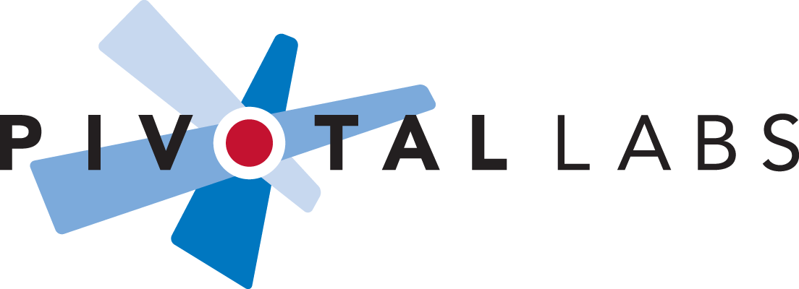

about me
About Me


My name is Ali Hirani and I am currently studying Computer Engineering at the University of Waterloo. I am deeply passionate about exploring various technologies in both the software and hardware spaces. I have delved into the following areas: Object oriented programming in C# and Java, quality assurance through black and grey box exploratory testing of applications, mobile app development for the Android platform in Java using Android Studio, Web development with HTML and CSS and the construction of various hardware projects using Arduino and Raspberry Pi.
The Present
I recently completed a 4 month internship at Pivotal Labs - an agile software development-consulting firm. As an Agile Test Engineer, my primarily responsibility was the manual testing of mobile applications as an essential component of the development process. I also had the opportunity to explore automated UI testing for Android applications using Google's Espresso API as well as assist in organizing and hosting two internal beta sessions for Android apps.

My Experience
-
Android Developer
My interest in android development sparked as a result of my interest in mobile app development, open source platforms and due to my love of the operating system. I began with basic Youtube tutorials and later progressed to Project Sunshine, a course offered by Google through Udacity. Here, I constructed a weather application and explored the use of network calls and AsyncTasks to make use of the OpenWeatherMap API.
After learning this I saw through my own project which uses the AcroMine API to return the various long-forms for (primarily medical) acronyms. The application implements an AsyncTask for the API call and a SQLite database for localized search history. -
Agile Test Engineer
My primary responsibilities include: manual testing of mobile applications in an agile environment, applying exploratory testing methods using a charter based approached, bug reporting and tracking using Pivotal Tracker and JIRA, seeing applications through to release and going through release candidate test cases, using tools such as ADB, Charles Proxy, Xcode and Selenium.
My secondary responsibilities include: updating release candidate test cases, communicating with developers regarding issues and potential solutions, writing UI test cases in Java using the Espresso API, facilitating internal beta sessions, and creating and modifying scripts in bash utilized by the team. -
PC Support Specialist
My primary responsibility was to provide internal support to 1000s of employees, in 100+ locations globally, by phone, email and/or in person while addressing issues in the following areas: PC (hardware and software), Office 365, BlackBerry device and network, domain and VPN access, printers and MFUs, security account etc.
During the last month of my term, I acted as a monthly team captain which involved: facilitating communication between the IT director and the team, distributing daily team reports, overseeing the flow of over 200 support tickets at a time and allocating tasks to team members and managing crises.